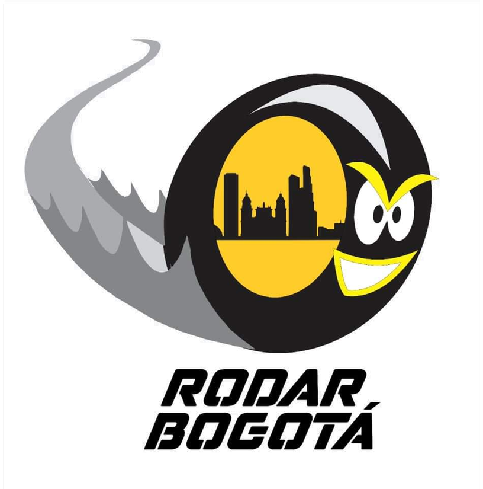

üö≤ Taller de bicicletas sin cita en Suba Gaitana
Mantenimiento MTB y urbanas con atención confiable
Tu bici necesita algo más que aire: necesita cuidado profesional. En Rodar Bogotá ofrecemos revisión, lavado y frenos Shimano sin cita previa. Atendemos en Suba Gaitana y barrios vecinos todos los días.
✅ Servicios destacados:
- Frenos Shimano MT200, hidráulicos y mecánicos
- Lavado con desinfección de transmisión
- Instalación de llantas Chaoyang y cartuchos Kenli
- Calibración de rines, núcleos y radios
- Personalización con accesorios visuales
- Kit de parches y revisión sin costo
Rodamos contigo desde Suba norte, Tibabuyes, Lisboa y Villa María.